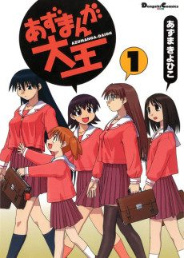

Azumanga Daioh
あずまんが大王 THE ANIMATION
The anime covers the whole manga.
7.9AniList score
—Animeter, no votes yet
26episodes
Anime finished. Where does the manga pick up?
StatusFully adapted
The anime selectively adapts the whole manga, skipping some jokes and adding a few original scenes; both end with the girls' graduation. The manga is finished.